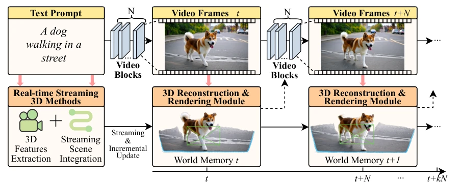
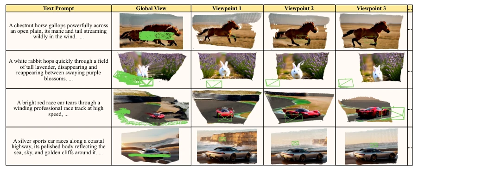

This paper implements a 'pipeline acceleration' for 4D world models, tightly coupling video generation and 3D reconstruction. Although claimed to accelerate, the 1.24x improvement in today's expensive compute era resembles changing to smoother wheels for an ox cart rather than replacing the engine. The most significant criticism lies in the appendix admitting performance loss from single-card resource contention, and future work explicitly stating the need for 'closed-loop feedback' to correct geometric drift, effectively admitting that current open-loop generation suffers from cumulative errors. However, achieving real-time streaming 4D on a single RTX 4090 is indeed a practical patch for embodied AI interaction latency, superior to pure offline solutions at least, suitable for latency-sensitive scenarios.
研究动机Motivation
现有的 4D 生成范式大多采用“先视频后重建”的离线解耦设计，这种串行依赖导致高交互延迟，无法满足具身 AI 的实时需求。例如 Rolling Forcing [14] 和 Stream3R [13] 虽支持流式，但仍将视频生成与 3D 重建视为线性独立阶段，导致计算冗余和时序不同步。CUT3R [29] 虽能重建，但需等待完整序列。这种瓶颈限制了交互式 4D 合成，亟需一种能在线演化世界表示的同步架构，否则具身智能体在动态环境中将始终处于“卡顿”状态，无法实现真正的实时交互。
Existing 4D generation paradigms mostly adopt an 'video-then-reconstruction' offline decoupled design; this serial dependency leads to high interaction latency, failing to meet the real-time needs of embodied AI. For instance, Rolling Forcing [14] and Stream3R [13], while supporting streaming, still treat video generation and 3D reconstruction as linear independent stages, resulting in computational redundancy and temporal desynchronization. CUT3R [29] can reconstruct but requires waiting for the complete sequence. This bottleneck restricts interactive 4D synthesis, urgently necessitating a synchronous architecture capable of online evolving world representations; otherwise, embodied agents in dynamic environments will remain in a 'lagging' state, unable to achieve true real-time interaction.
The core is the synchronous pipeline of Streaming4D. The frontend adopts a Self-Forcing [10] style autoregressive generator, decomposing video into discrete blocks $B_k$ (e.g., 3 frames), rather than per-frame output, to balance consistency and throughput. The backend implements incremental 3D reconstruction based on CUT3R [29], maintaining persistent state $S_k$. The key innovation lies in pipeline parallelism: when the generator processes $B_k$, the reconstruction module processes $B_{k-1}$ in parallel. The formula shows total latency changes from serial summation to overlap maximum, effectively hiding generation overhead. State updates fuse new observations via UpdateTransformer, while ReadoutTransformer outputs the point cloud, ensuring geometric consistency. This design allows the 3D world to evolve online with the video stream, rather than post-hoc remediation, achieving decoupled parallelism of generation and inference.

Figure 1. Overview of our Streaming4D. Given a text prompt, our framework enables real-time 4D synthesis via a synchronous, block- wise autoregressive pipeline. It comprises two coupled modules: (1) Video Generation, producing contiguous N −frame video blocks(N = 3m), and (2) 3D Reconstruction, which integrates features into a persistent World Memory. By parallelizing the de- noising of block Bn+1 with the reconstruction of block Bn, our system achieves incremental, real-time world modeling. The dotted line denotes an optional geometric consistency constraint.
Tested on a single RTX 4090 card, resolutions ranging from 384x208 to 640x368. The baseline is the sequentially executed CUT3R pipeline. Tab 1 shows a speedup of 1.21x to 1.24x, validating the robustness of the parallel mechanism. Tab 2 evaluates reconstruction quality on the 7-Scenes dataset; metrics (Acc, Comp, NC) are comparable or slightly superior to CUT3R, proving that geometric fidelity was not sacrificed. Appendix analysis indicates highest efficiency at medium resolutions, as low-resolution overhead constitutes a large proportion, while high-resolution VRAM contention is severe. Overall, this demonstrates the feasibility of achieving low-latency 4D generation under limited hardware, laying the foundation for subsequent closed-loop research.

Figure 2. Qualitative results of Streaming4D. Driven purely by text prompts, our block-wise AR generator and continuous 3D recon- structor operate synchronously to model dynamic scenes. The Global View reveals the underlying 3D point cloud structure and the camera poses (green boxes) tracked over time. The Viewpoints illustrate the framework’s ability to provide geometrically grounded visual synthe- sis across different viewing angles and timesteps.